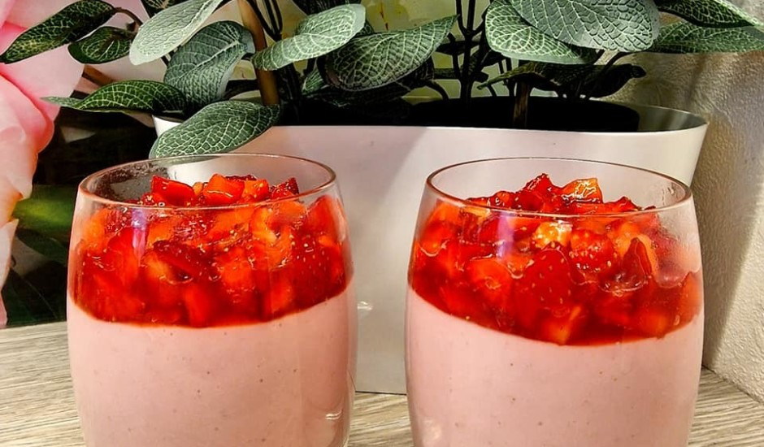

Zemeņu pudeņš
Zemeņu prieki - pudiņš, kas garšo kā vasara. Receptes un foto autore: Aina Pitrāne
600 ml piena
80 g cukura
4 ēd. k. kukurūzas cietes
Vaniļas cukurs pēc garšas
550 g zemeņu
Pūdercukurs pēc garšas

Recepte
Sākums
Vistas šasliks
Torte